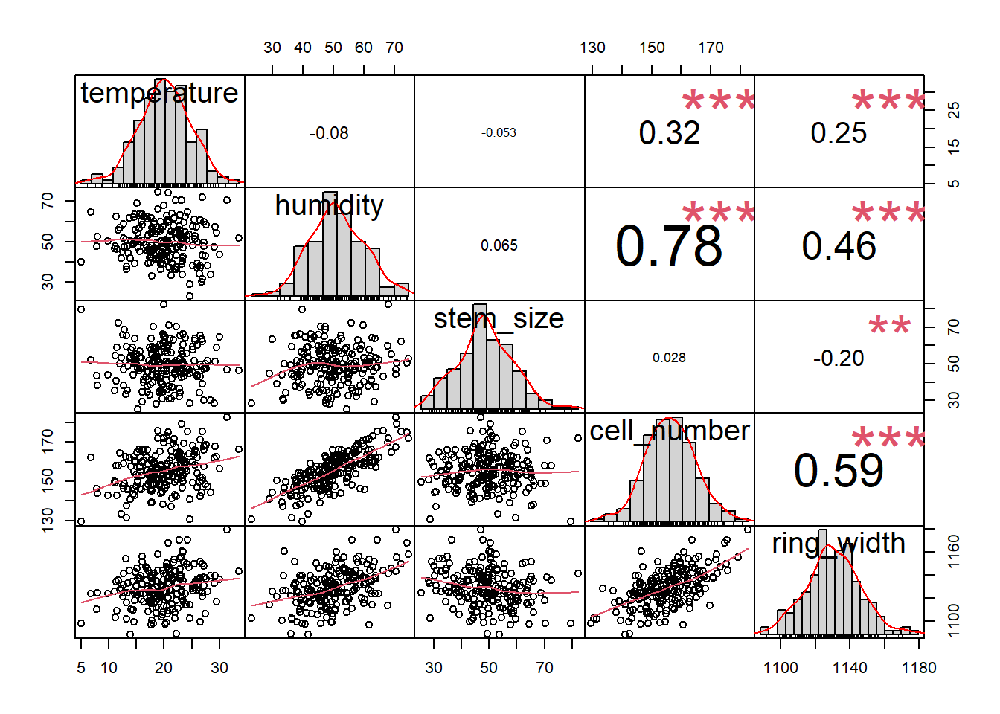

Les modèles d’équations structurelles appartiennent à une famille de modèles qui consistent en un ensemble d’équations mathématiques et d’hypothèses sur un système étudié. Ces hypothèses découlent de nos connaissances préalables ou de nos suppositions sur le fonctionnement du système. En statistique, un système est un ensemble de variables ou de phénomènes qui sont étudiés dans le cadre d’une analyse ou d’une étude. Ces variables peuvent être liées par des relations complexes. Notre objectif avec l’analyse est de comprendre comment ces variables interagissent les unes avec les autres ou comment elles influencent un résultat ou un phénomène en particulier.
Types de variables et relations dans un modèle d’équations structurelles ;
Du modèle théorique au modèle statistique ;
Ajustement du modèle dans lavaan.
La structure théorique d’un modèle d’équations structurelles englobe plusieurs types de variables, définissant leurs caractéristiques et leurs rôles dans le modèle.
Selon leur nature, les variables peuvent être classées en 1) variables latentes et 2) variables observées. Une variable latente est une variable qui n’est pas mesurée directement, mais qui représente des concepts ou des traits qui n’ont pas vraiment d’unité de mesure. Il s’agit d’un type de variable plus souvent utilisé en psychologie (l’intelligence, la satisfaction, etc.). Les variables observées sont des variables mesurées ou collectées avec des méthodes établies par la discipline. En écologie, nous travaillons souvent avec des variables observées.
Selon le rôle des variables dans le modèle théorique, les variables peuvent être exogènes ou endogènes. Les variables exogènes sont des variables indépendantes qui influencent les autres variables dans les modèles, mais qui ne sont pas influencées par aucune autre variable en retour. Elles représentent les moteurs des changements dans notre système. Les variables endogènes, vice-versa, sont des variables qui sont influencées par les variables exogènes ou d’autres variables du modèle, et représentent normalement le noyau de notre système et les résultats des processus que nous sommes en train de décrire avec notre modèle.
Selon la façon dont les variables sont conceptualisées dans le modèles, les variables peuvent avoir un statut de modérateur et de médiateur. Un modérateur est une variable qui influence la force et la direction du lien entre deux variables. Une variable modératrice n’explique pas les “causes” du lien, mais elle intervient seulement dans les aspects quantitatives de la relation étudiée entre deux variables. Un médiateur est une variable qui explique le lien entre une variable indépendante et une variable dépendante. Une variable agit comme variable médiatrice lorsque elle représente la cause du lien entre deux variables.
Dans la figure, les fléchés représentent des chemin. Dans un modèle d’équations structurelles un chémin répresnete une relation qui relie deux variables, pouvant être directe ou indirecte, et pouvant inclure des effets médiatisés. Comme vous pouvez le voir dans l’image, les effets médiatisés se réfèrent à une situation où l’impact d’une variable indépendante sur une variable dépendante passe par une autre variable. Autrement dit, la variable médiatrice transmet ou médie l’effet de la variable indépendante sur la variable dépendante.
Dans un modèle d’équations structurelles, l’analyse de médiation et e modération sont intégrées pour obtenir une compréhension plus profonde des relations entre nos variables, en tenant compte à la fois de processus médiatiques et des effets des modérateurs. Cependant, on peut réaliser des analyses des modérateurs et de médiateurs si on souhaite tester des les relations entres trois variables avec le package Psych:
La fonction ‘mediate’ du package ‘psych’ vous permet de conduire une analyse de médiation avec la fonction ‘mediate’. La variable médiatrice doit être mise entre parenthèses afin d’informer la fonction de son rôle dans le modèle. Dans l’exemple que nous allons utiliser pour montrer la fonction, nous utilisons la fonction ‘mediate’ pour tester les effets directs et indirects de la température sur la largeur des cernes de croissance. En effet, dans l’hémisphère nord et dans des environnements froids où la température est un facteur limitant pour la croissance, la largeur des cernes de croissance augmente avec la température. Cependant, la largeur du cerne de croissance est étroitement liée au nombre de cellules du bois qui composent le cerne, et qui est, à son tour, reliée à la température. Ainsi, une partie de l’effet total de la température sur la largeur du cerne est en effet médiée par le nombre de cellules. Si l’effet direct de la température sur le nombre de cellules est plus grand par rapport à celui sur la largeur du cerne, les changements de température seront plus liés aux changements du nombre de cellules qu’à la largeur du cerne, et donc ces derniers seront plus facilement prédictibles.
require(psych)## Le chargement a nécessité le package : psych## Warning: le package 'psych' a été compilé avec la version R 4.3.3ringdatacell <- read.csv("C:/Users/buttoval/Documents/ECL8202/donnees//simulatedsemring.csv")
medanalysys<-mediate( ring_width ~ temperature + (cell_number) , data=ringdatacell)Nota bene la fonction “mediate” nous donne les coefficients standardisées par defaut, ainsi que les moyennes centrées. pour éviter cela il faut utiliser les aurgments “zero=FALSE” et std=FALSE.
medanalysys<-mediate( ring_width ~ temperature + (cell_number) , std=TRUE, data=ringdatacell)Dans une analyse de modération, on examine comment l’effet d’une variable indépendante sur une variable dépendante peut être modifié par une autre variable, appelée modérateur. Pour évaluer cette interaction, on inclut généralement un terme d’interaction dans le modèle de régression multiple. Ce terme d’interaction permet de tester si l’effet de la variable indépendante sur la variable dépendante varie en fonction des niveaux du modérateur. En résumé, une analyse de modération est une régression multiple avec une interaction. On peut obtenir un modèle de modération en utilisant la fonction médiate, mais sans spécifier l’effet du modérateur.
mod_analysis<-mediate( cell_number ~ humidity + humidity*temperature + temperature,
data=ringdatacell,std=TRUE)summary(mod_analysis)## Call: mediate(y = cell_number ~ humidity + humidity * temperature +
## temperature, data = ringdatacell, std = TRUE)
##
## No mediator specified leads to traditional regression
## cell_number se t df Prob
## Intercept 0.00 0.06 0.00 196 1.00e+00
## humidity 0.47 0.06 7.56 196 1.55e-12
## temperature 0.26 0.06 4.20 196 4.13e-05
## humidity*temperature 0.02 0.06 0.26 196 7.92e-01
##
## R = 0.52 R2 = 0.27 F = 24.77 on 3 and 196 DF p-value: 1.25e-13Lorsqu’on décide de réaliser une SEM, une hypothèse bien définie représente le meilleur investissement pour valoriser cette analyse. Nous allons donc classer nos variables selon la typologie définie dans le paragraphe précédent, puis construire notre modèle a priori. Ce modèle représente notre compréhension du système basée sur les preuves scientifiques que nous avons recueillies dans notre étude, et contient nos hypothèses sous forme de liens entre les variables.
Dans une SEM, on établit un modèle théorique basé sur des relations postulées entre les variables, puis on teste ce modèle avec des données réelles pour voir s’il correspond bien à ces données. L’objectif est de déterminer si le modèle théorique est statistiquement valide et peut être généralisé aux données réelles. La validation du modèle nécessite donc de ne pas rejeter l’hypothèse nulle selon laquelle les relations entre les variables telles qu’elles sont spécifiées dans le modèle théorique sont également présentes dans les données réelles, et que toute différence observée entre le modèle théorique et les données réelles est due au hasard ou à des erreurs de mesures.
Dans un SEM, on peut utilier des symboles peuvent être utilisés pour représenter les liens et les variables dansun diagramme:
Il y a plusieurs packages qui peuvent vous permettre de réaliser un modèle SEM sur R. Ici nous allons utiliser Lavaan, qui utilise ça propre syntaxe pour définir les variables du modèle et leur liens.
| Formule et définition | operateur | signification |
|---|---|---|
| variable latente | =~ | obtenue à partir de |
| Covariable | ~~ | est correlé avec |
| intercepte | ~1 | intercepte |
Pour un exemple, nous allons utiliser un jeu de données simulées contenants les informations suivantes:
Température : La température moyenne en degrés Celsius enregistrées pendant la saison de croissance. Humidité : Le pourcentage moyen d’humidité relatif enregistré pendant la saison de croissance. Taille de la tige : La taille moyenne de la tige de la plante, en cm nombre de cellules : le nombre total de cellules observées dans chaque cerne de croissance Largeur des cernes : La largeur moyenne des anneaux de croissance, une mesure de la croissance annuelle des arbres.
simulated_data1 <- read.csv("C:/Users/buttoval/Documents/ECL8202/donnees/simulatedsemring1.csv")Avant d’ajuster un modèle SEM, il est souvent utile de visualiser une matrice de corrélation entre les variables
library(PerformanceAnalytics)## Le chargement a nécessité le package : xts## Le chargement a nécessité le package : zoo##
## Attachement du package : 'zoo'## Les objets suivants sont masqués depuis 'package:base':
##
## as.Date, as.Date.numeric##
## Attachement du package : 'PerformanceAnalytics'## L'objet suivant est masqué depuis 'package:graphics':
##
## legendchart.Correlation(simulated_data1, histogram = TRUE, method = "pearson") La matrice de corrélation montre des corrélations élevées entre la plupart de nos variables, mais elle ne nous dit rien sur les relations entre elles. Un modèle théorique basé sur la littérature est proposé pour expliquer les liens entre nos variables et le processus sous-jacent de la croissance:
Sur lavaan, nous pouvons traduire le modèle avec la syntax suivante:
require(lavaan)## Le chargement a nécessité le package : lavaan## This is lavaan 0.6-15
## lavaan is FREE software! Please report any bugs.##
## Attachement du package : 'lavaan'## L'objet suivant est masqué depuis 'package:psych':
##
## cor2covmyModel <- '
# regressions
ring_width ~ temperature + humidity+ cell_number
cell_number ~ temperature + humidity
ring_width ~ ~ stem_size
'
fit <- sem(model = myModel,
data = simulated_data1)
summary(fit)## lavaan 0.6.15 ended normally after 32 iterations
##
## Estimator ML
## Optimization method NLMINB
## Number of model parameters 9
##
## Number of observations 200
##
## Model Test User Model:
##
## Test statistic 1.334
## Degrees of freedom 3
## P-value (Chi-square) 0.721
##
## Parameter Estimates:
##
## Standard errors Standard
## Information Expected
## Information saturated (h1) model Structured
##
## Regressions:
## Estimate Std.Err z-value P(>|z|)
## ring_width ~
## temperature 0.251 0.230 1.092 0.275
## humidity 0.127 0.179 0.711 0.477
## cell_number 0.883 0.190 4.638 0.000
## cell_number ~
## temperature 0.742 0.068 10.991 0.000
## humidity 0.801 0.035 23.050 0.000
##
## Covariances:
## Estimate Std.Err z-value P(>|z|)
## .ring_width ~~
## stem_size -35.300 9.797 -3.603 0.000
##
## Variances:
## Estimate Std.Err z-value P(>|z|)
## .ring_width 166.464 16.646 10.000 0.000
## .cell_number 21.391 2.139 10.000 0.000
## stem_size 107.827 10.783 10.000 0.000Le résumé de la fonction sem nous fournit ainsi les coefficients de régression qui indiquent la force et la direction de la relation entre nos variables. Les coefficients de covariance mesurent également la force et la direction de la corrélation entre les variables. On peut interpréter ces coefficients comme n’importe quels coefficients d’une régression linéaire. Cependant, il peut être très utile de standardiser la valeur des coefficients si l’on souhaite comparer l’effet des différentes variables sur notre variable réponse.
On considère qu’un SEM représente bien notre distribution de données et notre phénomène naturel lorsque le p-value (chi carré) du modèle n’est pas significatif. Cela arrive parce que nous souhaitons observer une correspondance entre les données observées et les prédictions de notre modèle, lesquelles ne doivent pas présenter de différences significatives. Dans ce cas, le p-value est de 0.713, ce qui nous rassure quant à la capacité du modèle à représenter notre phénomène.Il est également utile de vérifier d’autres mesures d’ajustement du modèle, pour obtenir une évaluation plus complète de l’adéquation du modèle. Voici les indicateurs plus courentment utilisés. Voici une synthèse présentée par Joreskog, K., & Sorbom, D. (1993):
il est possible de trouver ces metriques d’ajoustement pour notre modèle grace à la fonction: fitMeasures()
fitMeasures(fit, c("chisq", "df", "pvalue", "cfi", "rmsea"))## chisq df pvalue cfi rmsea
## 1.334 3.000 0.721 1.000 0.000Il existe des standards pour nous naviguer dans la présentation de ces indicateurs:
summary(fit,standardized=TRUE)## lavaan 0.6.15 ended normally after 32 iterations
##
## Estimator ML
## Optimization method NLMINB
## Number of model parameters 9
##
## Number of observations 200
##
## Model Test User Model:
##
## Test statistic 1.334
## Degrees of freedom 3
## P-value (Chi-square) 0.721
##
## Parameter Estimates:
##
## Standard errors Standard
## Information Expected
## Information saturated (h1) model Structured
##
## Regressions:
## Estimate Std.Err z-value P(>|z|) Std.lv Std.all
## ring_width ~
## temperature 0.251 0.230 1.092 0.275 0.251 0.076
## humidity 0.127 0.179 0.711 0.477 0.127 0.075
## cell_number 0.883 0.190 4.638 0.000 0.883 0.512
## cell_number ~
## temperature 0.742 0.068 10.991 0.000 0.742 0.386
## humidity 0.801 0.035 23.050 0.000 0.801 0.810
##
## Covariances:
## Estimate Std.Err z-value P(>|z|) Std.lv Std.all
## .ring_width ~~
## stem_size -35.300 9.797 -3.603 0.000 -35.300 -0.263
##
## Variances:
## Estimate Std.Err z-value P(>|z|) Std.lv Std.all
## .ring_width 166.464 16.646 10.000 0.000 166.464 0.643
## .cell_number 21.391 2.139 10.000 0.000 21.391 0.245
## stem_size 107.827 10.783 10.000 0.000 107.827 1.000Revelle, 2024: How to use the psych package for regression and mediation analysis: https://cran.r-project.org/web/packages/psychTools/vignettes/mediation.pdf
Yves Rosseel (2012). lavaan: An R Package for Structural Equation Modeling. Journal of Statistical Software, 48(2), 1-36. URL http://www.jstatsoft.org/v48/i02/ https://lavaan.ugent.be/
Joreskog, K., & Sorbom, D. (1993). Structural equation modelling: Guidelines for determining model fit. NY: University Press of America.